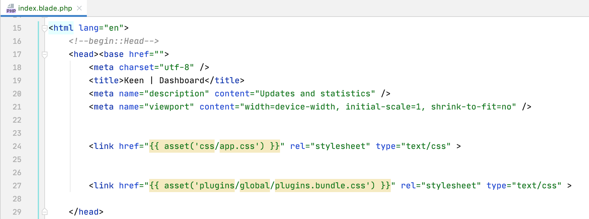
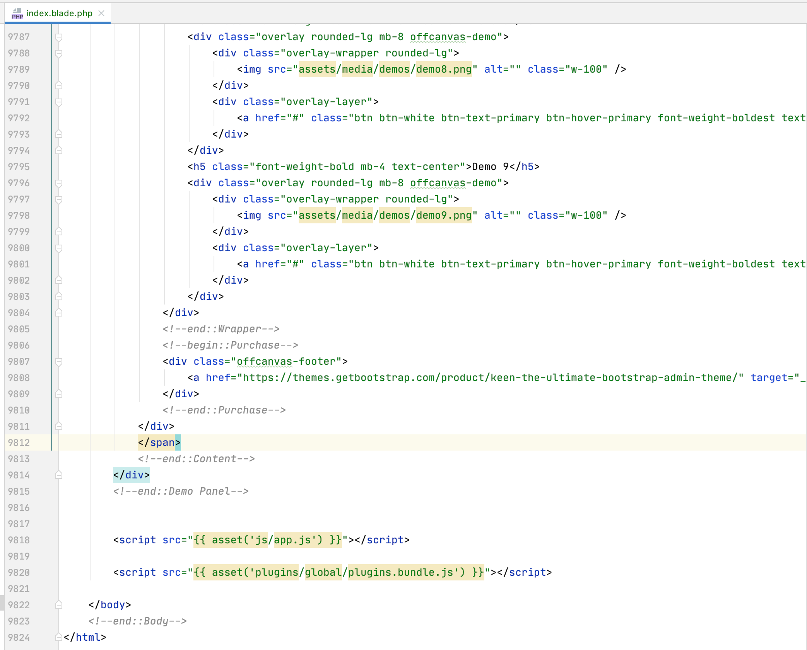

This documentation manual will explain how to implement Keenthemes designed admin dashboard theme "Keen" in Laravel application. This article provided assuming you have a commom knowledge/understanding of Keen, Laravel and Webpack
Go to the Laravel installation site to install the application. Or use below command if you already have the Laravel installed.
composer create-project --prefer-dist laravel/laravel laravelAfter Laravel finished installing, move to freshly installed application directory:
cd laravelFor the simplicity, we will just copy the whole Keen's demo folder instead of just assets.
Copy Keen demo1 folder into laravel resources folder. From /keen/theme/demo1 into /laravel/resources/demo1
package.jsonOpen /laravel/resources/demo1/tools/package.json and copy dependencies list. Paste it into /laravel/package.json dependencies list
{
"private": true,
"scripts": {
"dev": "npm run development",
"development": "mix",
"watch": "mix watch",
"watch-poll": "mix watch -- --watch-options-poll=1000",
"hot": "mix watch --hot",
"prod": "npm run production",
"production": "mix --production"
},
"dependencies": {
"@ckeditor/ckeditor5-alignment": "^23.1.0",
"@ckeditor/ckeditor5-build-balloon": "^23.1.0",
"@ckeditor/ckeditor5-build-balloon-block": "^23.1.0",
"@ckeditor/ckeditor5-build-classic": "^23.1.0",
"@ckeditor/ckeditor5-build-decoupled-document": "^23.1.0",
"@ckeditor/ckeditor5-build-inline": "^23.1.0",
"@fortawesome/fontawesome-free": "^5.15.1",
"@fullcalendar/bootstrap": "^4.4.2",
"@fullcalendar/core": "^4.4.2",
"@fullcalendar/daygrid": "4.4.2",
"@fullcalendar/google-calendar": "^4.4.0",
"@fullcalendar/interaction": "^4.4.2",
"@fullcalendar/list": "^4.4.2",
"@fullcalendar/timegrid": "^4.4.2",
"@shopify/draggable": "^1.0.0-beta.8",
"@uppy/core": "^1.14.0",
"@uppy/progress-bar": "^1.3.21",
"@uppy/tus": "^1.7.9",
"@yaireo/tagify": "3.21.4",
"acorn": "^8.0.4",
"animate.css": "^4.1.1",
"apexcharts": "^3.22.2",
"autosize": "^4.0.2",
"block-ui": "^2.70.1",
"bootstrap": "4.6.0",
"bootstrap-datepicker": "^1.9.0",
"bootstrap-daterangepicker": "^3.1.0",
"bootstrap-markdown": "^2.10.0",
"bootstrap-maxlength": "^1.10.0",
"bootstrap-notify": "^3.1.3",
"bootstrap-select": "^1.13.18",
"bootstrap-switch": "3.3.0",
"bootstrap-timepicker": "^0.5.2",
"bootstrap-touchspin": "^4.2.5",
"chart.js": "^2.9.4",
"clipboard": "^2.0.4",
"counterup": "^1.0.2",
"cropperjs": "^1.5.6",
"datatables.net": "^1.10.22",
"datatables.net-autofill-bs4": "^2.3.5",
"datatables.net-bs4": "1.10.22",
"datatables.net-buttons-bs4": "^1.6.3",
"datatables.net-colreorder-bs4": "^1.5.2",
"datatables.net-fixedcolumns-bs4": "^3.3.2",
"datatables.net-fixedheader-bs4": "^3.1.7",
"datatables.net-keytable-bs4": "^2.5.3",
"datatables.net-responsive-bs4": "^2.2.6",
"datatables.net-rowgroup-bs4": "^1.1.2",
"datatables.net-rowreorder-bs4": "^1.2.7",
"datatables.net-scroller-bs4": "^2.0.3",
"datatables.net-select-bs4": "^1.3.1",
"dropzone": "^5.7.2",
"dual-listbox": "1.4.0-alpha3",
"es6-promise": "^4.2.8",
"es6-promise-polyfill": "^1.2.0",
"es6-shim": "^0.35.6",
"esri-leaflet": "^2.5.1",
"esri-leaflet-geocoder": "^2.3.3",
"flot": "^4.2.1",
"gmaps": "^0.4.25",
"handlebars": "4.7.6",
"inputmask": "^5.0.5",
"ion-rangeslider": "^2.3.1",
"jkanban": "^1.2.3",
"jquery": "3.4.1",
"jquery-mask-plugin": "^1.14.16",
"jquery.repeater": "^1.2.1",
"jqvmap": "^1.5.1",
"jstree": "^3.3.10",
"jszip": "^3.5.0",
"leaflet": "^1.7.1",
"line-awesome": "^1.3.0",
"markdown": "^0.5.0",
"moment": "^2.29.1",
"morris.js": "^0.5.0",
"nouislider": "^14.6.2",
"owl.carousel": "^2.3.4",
"pace": "0.0.4",
"pace-js": "^1.0.2",
"path": "^0.12.7",
"pdfmake": "^0.1.68",
"perfect-scrollbar": "^1.5.0",
"popper.js": "^1.16.1",
"prismjs": "^1.22.0",
"quill": "^1.3.7",
"rimraf": "^3.0.2",
"select2": "^4.0.13",
"socicon": "^3.0.5",
"sticky-js": "^1.3.0",
"summernote": "^0.8.18",
"sweetalert2": "^10.10.0",
"tempusdominus-bootstrap-4": "^5.1.2",
"tinymce": "^5.5.1",
"toastr": "^2.1.4",
"typeahead.js": "^0.11.1",
"uppy": "^1.23.0",
"waypoints": "^4.0.1",
"wnumb": "^1.2.0"
},
"devDependencies": {
"axios": "^0.21",
"laravel-mix": "^6.0.6",
"lodash": "^4.17.19",
"postcss": "^8.1.14",
"sass": "^1.32.8",
"sass-loader": "^11.0.1"
}
}
Important! Remove default package-lock.json file first from laravels root directory before the next step.
Now we can fetch the dependencies. Run this command in Laravel application root (where package.json is placed)
npm installAnd wait until it finishes downloading packages which will be placed under node_modules directory.
Find and open /laravel/resources/js/app.js file. Copy and paste below codes.
// Keen's plugins
window.KTUtil = require('../demo1/src/js/components/util.js');
window.KTApp = require('../demo1/src/js/components/app.js');
window.KTCard = require('../demo1/src/js/components/card.js');
window.KTCookie = require('../demo1/src/js/components/cookie.js');
window.KTDialog = require('../demo1/src/js/components/dialog.js');
window.KTHeader = require('../demo1/src/js/components/header.js');
window.KTImageInput = require('../demo1/src/js/components/image-input.js');
window.KTMenu = require('../demo1/src/js/components/menu.js');
window.KTOffcanvas = require('../demo1/src/js/components/offcanvas.js');
window.KTScrolltop = require('../demo1/src/js/components/scrolltop.js');
window.KTToggle = require('../demo1/src/js/components/toggle.js');
window.KTWizard = require('../demo1/src/js/components/wizard.js');
require('../demo1/src/js/components/datatable/core.datatable.js');
require('../demo1/src/js/components/datatable/datatable.checkbox.js');
require('../demo1/src/js/components/datatable/datatable.rtl.js');
// Keen layout base js
window.KTLayoutHeader = require('../demo1/src/js/layout/base/header.js');
window.KTLayoutHeaderMenu = require('../demo1/src/js/layout/base/header-menu.js');
window.KTLayoutHeaderTopbar = require('../demo1/src/js/layout/base/header-topbar.js');
window.KTLayoutSubheader = require('../demo1/src/js/layout/base/subheader.js');
window.KTLayoutBrand = require('../demo1/src/js/layout/base/brand.js');
window.KTLayoutAside = require('../demo1/src/js/layout/base/aside.js');
window.KTLayoutAsideToggle = require('../demo1/src/js/layout/base/aside-toggle.js');
window.KTLayoutAsideMenu = require('../demo1/src/js/layout/base/aside-menu.js');
window.KTLayoutContent = require('../demo1/src/js/layout/base/content.js');
window.KTLayoutFooter = require('../demo1/src/js/layout/base/footer.js');
window.KTLayoutStickyCard = require('../demo1/src/js/layout/base/sticky-card.js');
window.KTLayoutStretchedCard = require('../demo1/src/js/layout/base/stretched-card.js');
// Keen layout extended js
window.KTLayoutChat = require('../demo1/src/js/layout/extended/chat.js');
window.KTLayoutDemoPanel = require('../demo1/src/js/layout/extended/demo-panel.js');
window.KTLayoutExamples = require('../demo1/src/js/layout/extended/examples.js');
window.KTLayoutQuickActions = require('../demo1/src/js/layout/extended/quick-actions.js');
window.KTLayoutQuickNotifications = require('../demo1/src/js/layout/extended/quick-notifications.js');
window.KTLayoutQuickPanel = require('../demo1/src/js/layout/extended/quick-panel.js');
window.KTLayoutQuickSearch = require('../demo1/src/js/layout/extended/quick-search.js');
window.KTLayoutQuickUser = require('../demo1/src/js/layout/extended/quick-user.js');
window.KTLayoutScrolltop = require('../demo1/src/js/layout/extended/scrolltop.js');
window.KTLayoutSearch = window.KTLayoutSearchOffcanvas = require('../demo1/src/js/layout/extended/search.js');
require('../demo1/src/js/layout/initialize.js');Find and open /laravel/resources/sass/app.scss file. Copy and paste below codes.
// base style
@import "../demo1/src/sass/style";
// skins for demo1 only
@import "../demo1/src/sass/themes/layout/aside/dark";
@import "../demo1/src/sass/themes/layout/brand/dark";
@import "../demo1/src/sass/themes/layout/header/base/light";
@import "../demo1/src/sass/themes/layout/header/menu/light";Find and copy theme/tools/webpack/plugins folder, paste it inside your resources folder. Fix paths inside the plugins.js and plugins.scss.
//////////////////////////////////////////////////////////////////////
//////////////////////////////////////////////////////////////////////
//// Mandatory Plugins Includes(do not remove or change order!) ////
//////////////////////////////////////////////////////////////////////
//////////////////////////////////////////////////////////////////////
@import "~perfect-scrollbar/css/perfect-scrollbar.css";
@import "../demo1/src/plugins/keenthemes-icons/font/ki.css";
//////////////////////////////////////////////////////////////////////
//////////////////////////////////////////////////////////////////////
/// Optional Plugins Includes(you can remove or add) ///////////////
//////////////////////////////////////////////////////////////////////
//////////////////////////////////////////////////////////////////////
@import "~apexcharts/dist/apexcharts.css";
@import "~chart.js/dist/Chart.css";
@import "../demo1/src/plugins/formvalidation/dist/css/formValidation.css";
@import "~tempusdominus-bootstrap-4/build/css/tempusdominus-bootstrap-4.css";
@import "~bootstrap-datepicker/dist/css/bootstrap-datepicker3.css";
@import "~bootstrap-timepicker/css/bootstrap-timepicker.css";
@import "~bootstrap-daterangepicker/daterangepicker.css";
@import "~bootstrap-touchspin/dist/jquery.bootstrap-touchspin.css";
@import "~bootstrap-select/dist/css/bootstrap-select.css";
@import "~bootstrap-switch/dist/css/bootstrap3/bootstrap-switch.css";
@import "~select2/dist/css/select2.css";
@import "~ion-rangeslider/css/ion.rangeSlider.css";
@import "~nouislider/distribute/nouislider.css";
@import "~owl.carousel/dist/assets/owl.carousel.css";
@import "~owl.carousel/dist/assets/owl.theme.default.css";
@import "~dropzone/dist/dropzone.css";
@import "~quill/dist/quill.snow.css";
@import "~@yaireo/tagify/src/tagify.scss";
@import "~summernote/dist/summernote.css";
@import "~bootstrap-markdown/css/bootstrap-markdown.min.css";
@import "~animate.css/animate.css";
@import "~toastr/build/toastr.css";
@import "~dual-listbox/dist/dual-listbox.css";
@import "~sweetalert2/dist/sweetalert2.css";
@import "~line-awesome/dist/line-awesome/css/line-awesome.css";
@import "../demo1/src/plugins/flaticon/flaticon.css";
@import "../demo1/src/plugins/flaticon2/flaticon.css";
@import "~socicon/css/socicon.css";
@import "~@fortawesome/fontawesome-free/css/all.min.css";
//////////////////////////////////////////////////////////////////////
//////////////////////////////////////////////////////////////////////
//// Mandatory Plugins Includes(do not remove or change order!) ////
//////////////////////////////////////////////////////////////////////
//////////////////////////////////////////////////////////////////////
window.jQuery = window.$ = require('jquery');
require('bootstrap');
window.Popper = require('popper.js').default;
window.wNumb = require('wnumb');
window.moment = require('moment');
require("es6-shim/es6-shim.min.js");
window.PerfectScrollbar = require('perfect-scrollbar/dist/perfect-scrollbar');
//////////////////////////////////////////////////////////////////////
//////////////////////////////////////////////////////////////////////
/// Optional Plugins Includes(you can remove or add) ///////////////
//////////////////////////////////////////////////////////////////////
//////////////////////////////////////////////////////////////////////
window.Sticky = require('sticky-js');
window.ApexCharts = require('apexcharts/dist/apexcharts.min.js');
window.Chart = require('chart.js/dist/Chart.js');
window.FormValidation = require("../demo1/src/plugins/formvalidation/dist/js/FormValidation.full.min.js");
window.FormValidation.plugins.Bootstrap = require("../demo1/src/plugins/formvalidation/dist/amd/plugins/Bootstrap.js").default;
require('block-ui/jquery.blockUI.js');
require('tempusdominus-bootstrap-4/build/js/tempusdominus-bootstrap-4');
require('../demo1/src/js/vendors/plugins/tempusdominus-bootstrap-4.init.js');
require('jquery-mask-plugin');
require('bootstrap-datepicker/dist/js/bootstrap-datepicker.js');
require('../demo1/src/js/vendors/plugins/bootstrap-datepicker.init.js');
require('bootstrap-timepicker/js/bootstrap-timepicker.js');
require('../demo1/src/js/vendors/plugins/bootstrap-timepicker.init.js');
require('bootstrap-daterangepicker/daterangepicker.js');
require('bootstrap-touchspin/dist/jquery.bootstrap-touchspin.js');
require('bootstrap-maxlength/src/bootstrap-maxlength.js');
require('../demo1/src/plugins/bootstrap-multiselectsplitter/bootstrap-multiselectsplitter.min.js');
require('bootstrap-select/dist/js/bootstrap-select.js');
require('bootstrap-switch/dist/js/bootstrap-switch.js');
require('../demo1/src/js/vendors/plugins/bootstrap-switch.init.js');
require('select2/dist/js/select2.full.js');
require('ion-rangeslider/js/ion.rangeSlider.js');
window.Bloodhound = require('typeahead.js/dist/typeahead.bundle.js');
window.Handlebars = require('handlebars/dist/handlebars.js');
require('inputmask/dist/jquery.inputmask.js');
require('inputmask/lib/extensions/inputmask.date.extensions.js');
require('inputmask/lib/extensions/inputmask.numeric.extensions.js');
window.noUiSlider = require('nouislider/distribute/nouislider.js');
require('owl.carousel/dist/owl.carousel');
window.autosize = require('autosize/dist/autosize.js');
window.ClipboardJS = require('clipboard/dist/clipboard.min.js');
window.Dropzone = require('dropzone/dist/dropzone.js');
require('../demo1/src/js/vendors/plugins/dropzone.init.js');
window.Quill = require('quill/dist/quill.js');
require('@yaireo/tagify/dist/tagify.polyfills.min');
window.Tagify = require('@yaireo/tagify/dist/tagify.min');
require('summernote/dist/summernote.js');
require('markdown/lib/markdown.js');
require('bootstrap-markdown/js/bootstrap-markdown.js');
require('../demo1/src/js/vendors/plugins/bootstrap-markdown.init.js');
require('bootstrap-notify/bootstrap-notify.min.js');
require('../demo1/src/js/vendors/plugins/bootstrap-notify.init.js');
window.toastr = require('toastr/build/toastr.min.js');
window.DualListbox = require('dual-listbox').default;
window.sessionTimeout = require('../demo1/src/plugins/bootstrap-session-timeout/dist/bootstrap-session-timeout.min.js');
require('../demo1/src/plugins/jquery-idletimer/idle-timer.min.js');
require('waypoints/lib/jquery.waypoints.js');
require('counterup/jquery.counterup.js');
require('es6-promise-polyfill/promise.min.js');
window.Swal = window.swal = require('sweetalert2/dist/sweetalert2.min.js');
require('../demo1/src/js/vendors/plugins/sweetalert2.init.js');
require('jquery.repeater');Find and open /laravel/webpack.mix.js file. Copy and paste below codes.
const mix = require('laravel-mix');
const rimraf = require('rimraf');
const path = require('path');
/*
|--------------------------------------------------------------------------
| Mix Asset Management
|--------------------------------------------------------------------------
|
| Mix provides a clean, fluent API for defining some Webpack build steps
| for your Laravel applications. By default, we are compiling the CSS
| file for the application as well as bundling up all the JS files.
|
*/
// 3rd party plugins css/js
mix.sass('resources/plugins/plugins.scss', 'public/plugins/global/plugins.bundle.css').then(() => {
// remove unused preprocessed fonts folder
rimraf(path.resolve('public/fonts'), () => {});
rimraf(path.resolve('public/images'), () => {});
}).sourceMaps(!mix.inProduction())
// .setResourceRoot('./')
.options({processCssUrls: false}).js(['resources/plugins/plugins.js'], 'public/plugins/global/plugins.bundle.js');
mix.sass('resources/sass/app.scss', 'public/css');
mix.js('resources/js/app.js', 'public/js');
// copy images folder into laravel public folder
mix.copyDirectory('resources/demo1/src/media', 'public/assets/media');
// Global jquery
//mix.autoload({
//'jquery': ['$', 'jQuery'],
//Popper: ['popper.js', 'default'],
//});
/**
* plugins specific issue workaround for webpack
* @see https://github.com/morrisjs/morris.js/issues/697
* @see https://stackoverflow.com/questions/33998262/jquery-ui-and-webpack-how-to-manage-it-into-module
*/
mix.webpackConfig({
resolve: {
alias: {
'morris.js': 'morris.js/morris.js',
'jquery-ui': 'jquery-ui',
},
},
});Find and open /laravel/resources/demo1/src/assets/sass/style.scss and /laravel/resources/demo1/src/assets/sass/_init.scss files. Remove ../../../tools/node_modules/ path part and keep paths as it is shown below;
@import "~bootstrap/scss/bootstrap";@import "~bootstrap/scss/_mixins.scss";Run command to compile assets;
npm run devOnce finished we will see new files in public directory of Laravel application: /laravel/public/js/app.js and /laravel/public/css/app.css
That is it! We now can implement Keen theme layout into Laravel application and include scripts/styles we have compiled.
Copy from /laravel/resources/demo1/dist/index.html file into /laravel/resources/views/. Rename file as index.blade.php.
Open /laravel/resources/views/index.blade.php file. Include generated app.css,app.js, plugins.bundle.js and plugins.bundle.css file into HTML. Remove all existing CSS and JS file paths.
<link href="{{ asset('css/app.css') }}" rel="stylesheet" type="text/css" ><script src="{{ asset('js/app.js') }}"></script><link href="{{ asset('plugins/global/plugins.bundle.css') }}" rel="stylesheet" type="text/css" ><script src="{{ asset('plugins/global/plugins.bundle.js') }}"></script> The image of index.blade.php file.
 The image of index.blade.php file.
Find and open /laravel/routes/web.php file. Edit sample route to the file index.blade.php file.
return view('index');
Open cmd in /laravel/ and run below command. Open in browser http://127.0.0.1:8000/
php artisan serve